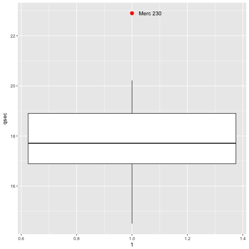
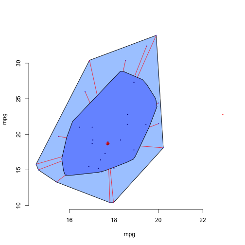

xwMOOC 기계학습
이상점(Outlier) 검출
핵심 개념
- 시각화를 통해 이상점 식별한다.
1. 단변량 이상점 검출 1
상자그림(boxplot)을 통해 분포를 시각화하거나 서로 다른 집단간 분포를 쉽게 시각화하여 비교가 가능하다. 특히, 이상점을 한눈에 볼 수 있게 ggplot을 활용하여 시각화하는 방법은 다음과 같다.
is_outlier함수를 통해 상자수염그림에서 이상점을 별도 점으로 표시하는 로직을 작성한다.mtcars데이터는 rownames를 갖는 데이터프레임이라 모델명을 별도 변수로 저장한다.- 이상점 표식에 사용될 라벨로 사용됨
is_outlier함수를 통해 이상점을 식별하여qsec_outlier변수에 저장한다.- ggplot의
geom_text함수에ifelse문을 적용하여 이상점만 표식한다.
# library(ggplot2)
data(mtcars)
is_outlier <- function(x) {
return(x < quantile(x, 0.25) - 1.5 * IQR(x) | x > quantile(x, 0.75) + 1.5 * IQR(x))
}
mtcars$model_name <- rownames(mtcars)
mtcars <- mtcars %>%
mutate(qsec_outlier = is_outlier(qsec))
ggplot(mtcars, aes(qsec, x=1)) +
geom_boxplot(outlier.colour = "red", outlier.size = 3) +
geom_text(aes(label=ifelse(qsec_outlier, model_name, "")), na.rm=TRUE, hjust=-0.3)
2. 이변량 이상점 검출 2 3
상자그림은 단변량 분포를 시각화하고 이상점을 추출할 때 적합하지만, 이변량인 경우 bagplot()을 통해 분포를 시각화하고 이상점을 추출하는 것이 가능해졌다.
깊이 중위수(depth median)이 중심이 되며, \(\frac{n}{2}\)의 데이터가 가운데 “가방(bag)”에 몰려있고, 가방을 3배 확장하여 펜스(fence)를 두르고 그 밖에 위치한 점은 이상점으로 별도로 표시한다.
# library(ggplot2)
# library(aplpack)
data(mtcars)
mtcars$model_name <- rownames(mtcars)
with(mtcars,
bagplot(qsec, mpg, xlab="mpg", ylab="mpg", show.outlier= TRUE,
show.looppoints=TRUE,
show.bagpoints=TRUE,dkmethod=2,
show.whiskers=TRUE,show.loophull=TRUE,
show.baghull=TRUE,verbose=FALSE))
# 이상점 표기
mtcars_bagplot <- with(mtcars, bagplot(qsec, mpg, xlab="qsec", ylab="mpg"))
mtcars_outlier <- as.data.frame(mtcars_bagplot$pxy.outlier)
names(mtcars_outlier) <- c("qsec", "mpg")
mtcars_outliers <- left_join(mtcars_outlier, mtcars)Joining, by = c("qsec", "mpg")
text(mtcars_outliers$qsec, mtcars_outliers$mpg, labels=mtcars_outliers$model_name, pos=1)